How do you inspect a thread that lives inside a dark, curved, 100 mm bore, when defect samples are too rare to train on?
螺纹藏在黑暗、弯曲的 100 mm 孔内，缺陷样本又极其稀少，如何做到自动检测？
Threaded connections hold aerospace parts, engines and oil-and-gas tubulars together, and a defective internal thread means a failed seal. But internal threads live in narrow, dark, curved bores with a helical geometry: a camera cannot see the whole surface at once, a point light casts shadows from every thread crest, and manual gauge inspection is slow, subjective and wears the part. Contact methods are accurate but slow; laser and eddy-current methods fail on reflective or non-metal parts.
螺纹连接把航空零件、发动机和油气管具连在一起，一个有缺陷的内螺纹意味着密封失效。但内螺纹藏在狭窄、黑暗、弯曲、呈螺旋几何的孔内：相机无法一次看到整个表面，点光源在每个牙顶都投下阴影，人工量规检测慢、主观且磨损零件。接触式方法准确但慢，激光和涡流方法在反光或非金属零件上失效。
And once the imaging works, a second wall appears: real defect samples are rare, so a detector cannot be trained well. This project went through both walls in turn—first a multi-camera imaging and stitching system, then a generative pipeline that manufactures the training data the detector needs.
而当成像问题解决之后，第二堵墙出现了：真实缺陷样本极少，检测器训练不好。这个项目先后穿过了这两堵墙——先是多相机成像与拼接系统，然后是为检测器制造训练数据的生成式流水线。
Six 1680×1080 fisheye cameras sit in two groups of three. Each group is arranged on a 120° ring and the two groups are offset by 60°, so their fields of view tile the whole bore; for small bores the groups shoot in a staggered mode so the second fills the gaps left by the first. A Raspberry Pi drives the cameras, the lighting and a stepper motor that advances the probe axially.
六个 1680×1080 的鱼眼相机分成两组，每组三个。每组按 120° 环形布置，两组错开 60°，视场正好铺满整个孔壁；对于小孔径，两组交错拍摄，第二组补上第一组留下的空隙。树莓派控制相机、光源和沿轴向推进探头的步进电机。
Lighting decided more than optics did. Point LEDs cast hard shadows from the thread crests, so each lens got a strip light beside it and the whole probe was wrapped in a diffuser to kill specular reflection from the metal. We first tested on a DN100 fully threaded tube, 110 mm inner diameter.
光照的影响甚至超过了光学设计。点光源会在牙顶投下硬阴影，于是每个镜头旁边改用条形光源，整个探头再包一层柔光材料消除金属的镜面反射。首次测试对象是 DN100 全螺纹管，内径 110 mm。
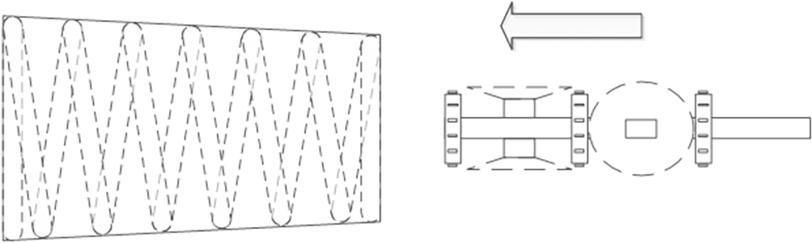
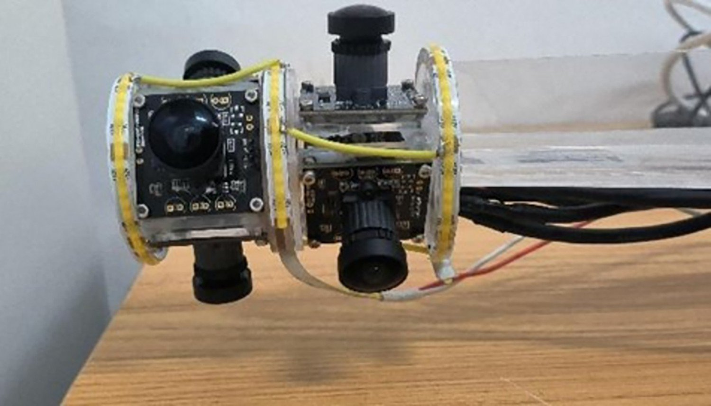
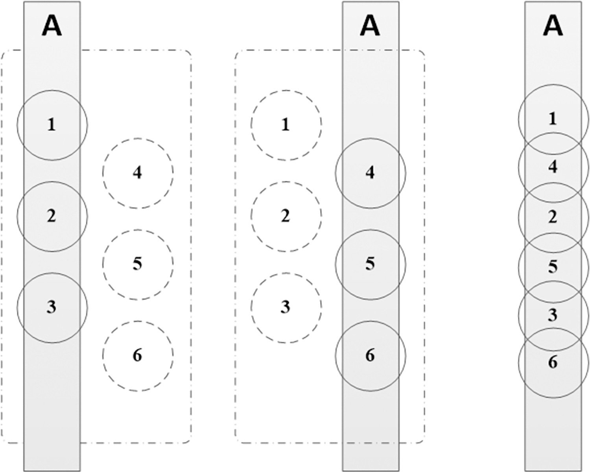
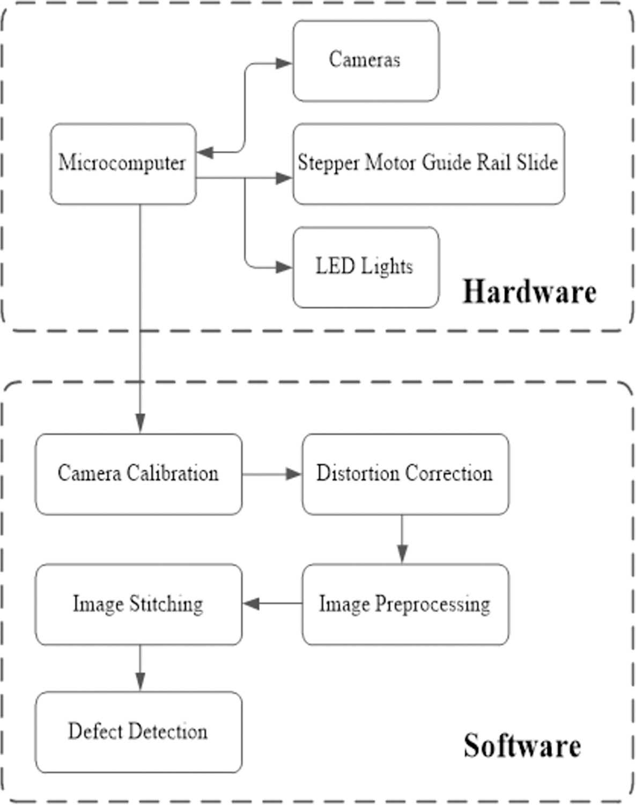
Every frame first goes through Zhang’s checkerboard calibration with sub-pixel corner refinement and fisheye undistortion. We benchmarked denoisers on 10 dB noise—BM3D won on quality (PSNR 34.9 dB, SSIM 0.971), DnCNN was chosen later for real-time speed—and compared Retinex variants for the dark bore, where MSRCR kept colour fidelity and detail. A curvature-based crop then discards the strongly distorted fisheye margins.
每一帧先经过张正友棋盘格标定、亚像素角点优化与鱼眼畸变校正。我们在 10 dB 噪声下对比去噪方法——BM3D 质量最好（PSNR 34.9 dB，SSIM 0.971），后来为了实时性选用 DnCNN；又比较了 Retinex 系列在暗孔中的表现，MSRCR 在色彩保真与细节上最佳。随后用基于曲率的裁剪去掉鱼眼边缘畸变严重的区域。
Stitching was the real obstacle. Planar homography pipelines—Harris, FAST, SIFT, SURF, ORB with DLT or RANSAC—all fail on a thread: the texture is repetitive and the surface is a cylinder, not a plane. The method that worked projects every frame onto a cylindrical model first, then matches SIFT features with RANSAC and blends with Laplacian pyramids, producing a seamless 360° unrolled panorama of the thread.
拼接才是真正的障碍。平面单应性流水线——Harris、FAST、SIFT、SURF、ORB 配合 DLT 或 RANSAC——在螺纹上全部失效：纹理重复，表面是柱面而不是平面。可行的方法是先把每帧投影到柱面模型上，再用 SIFT + RANSAC 匹配，最后用拉普拉斯金字塔融合，得到无缝的 360° 螺纹展开图。
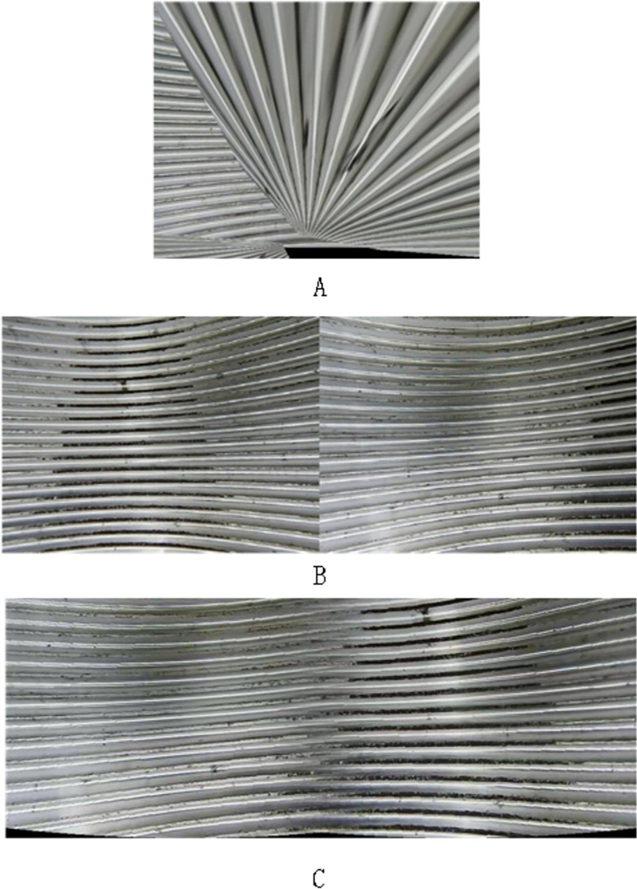
YOLOv8 trained on our annotated dataset reached mAP 91.6%, recall 84.7% and precision 88.4% on the corrosion class, against YOLOv5 (91.5 / 73.3 / 86.2) and SSD (71.1 / 46.7 / 87.5). On eight random bore images containing 19 defects it found 17. The resolution analysis sets the physical floor: a 100 mm bore with a 1080p camera resolves about 0.52 mm per pixel.
在我们标注的数据集上训练的 YOLOv8 在腐蚀类上达到 mAP 91.6%、召回率 84.7%、精确率 88.4%，对比 YOLOv5（91.5 / 73.3 / 86.2）和 SSD（71.1 / 46.7 / 87.5）。在随机抽取的 8 张含 19 处缺陷的孔内图像中检出 17 处。分辨率分析给出了物理下限：100 mm 孔径配 1080p 相机约为每像素 0.52 mm。
Then the data wall. Real internal-thread defects are too rare to train on, so the second paper built a Defect-aware Feature Manipulation GAN: a StyleGAN2 backbone pre-trained on hundreds of defect-free thread images, then defect-aware residual blocks and a defect-mapping network trained on a small set of defect images, with a second discriminator and a mode-seeking loss for diversity. It outputs a defect image and its mask together. Because real internal defects are so scarce, we validated the idea on external threads first—YOLOv8 trained on generated external images performed close to one trained on real ones—and only then trained the internal-thread detector on synthetic data: precision 94.3%, recall 79.5%, mAP 88.3%, finding 20 of 21 real defects in a sampled check (95.2%, up from 89.5% in the first system).
然后是数据这堵墙。真实内螺纹缺陷太少，无法直接训练，于是第二篇论文构建了缺陷感知特征操控 GAN（DFMGAN）：先用数百张无缺陷螺纹图像预训练 StyleGAN2 骨干，再用少量缺陷图像训练缺陷感知残差块和缺陷映射网络，配合第二个判别器和模式搜索损失保证多样性，同时输出缺陷图像及其掩膜。由于真实内螺纹缺陷过于稀少，我们先在外螺纹上验证思路——用生成的外螺纹图像训练的 YOLOv8 与用真实图像训练的表现接近——然后才用合成数据训练内螺纹检测器：精确率 94.3%、召回率 79.5%、mAP 88.3%，抽检 21 处真实缺陷检出 20 处（95.2%，高于第一代系统的 89.5%）。
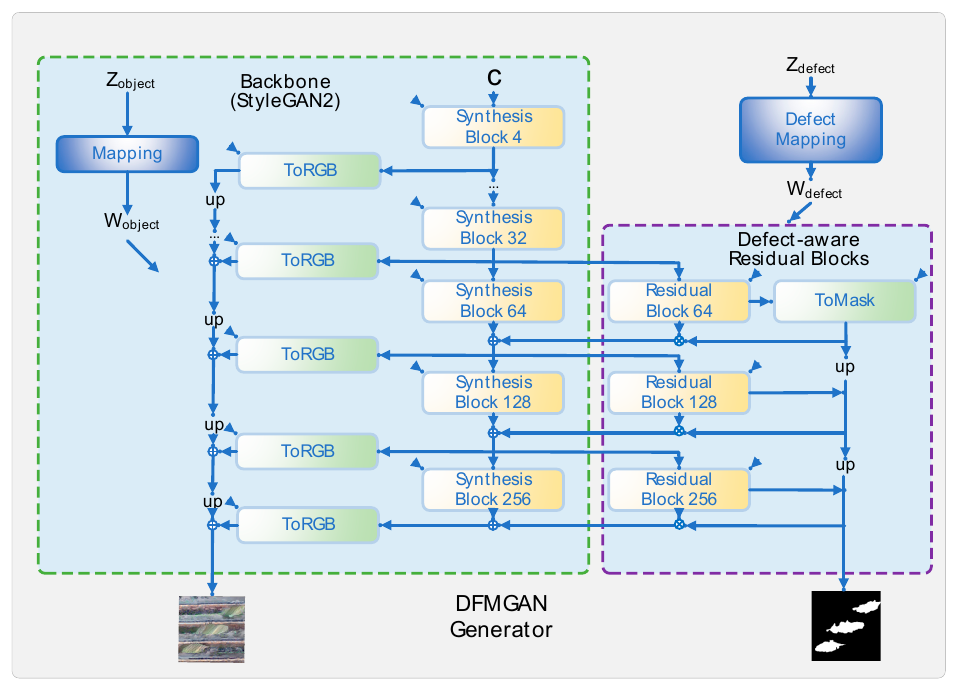
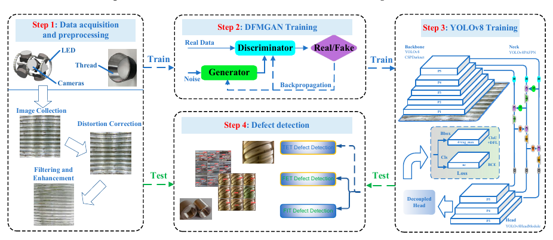
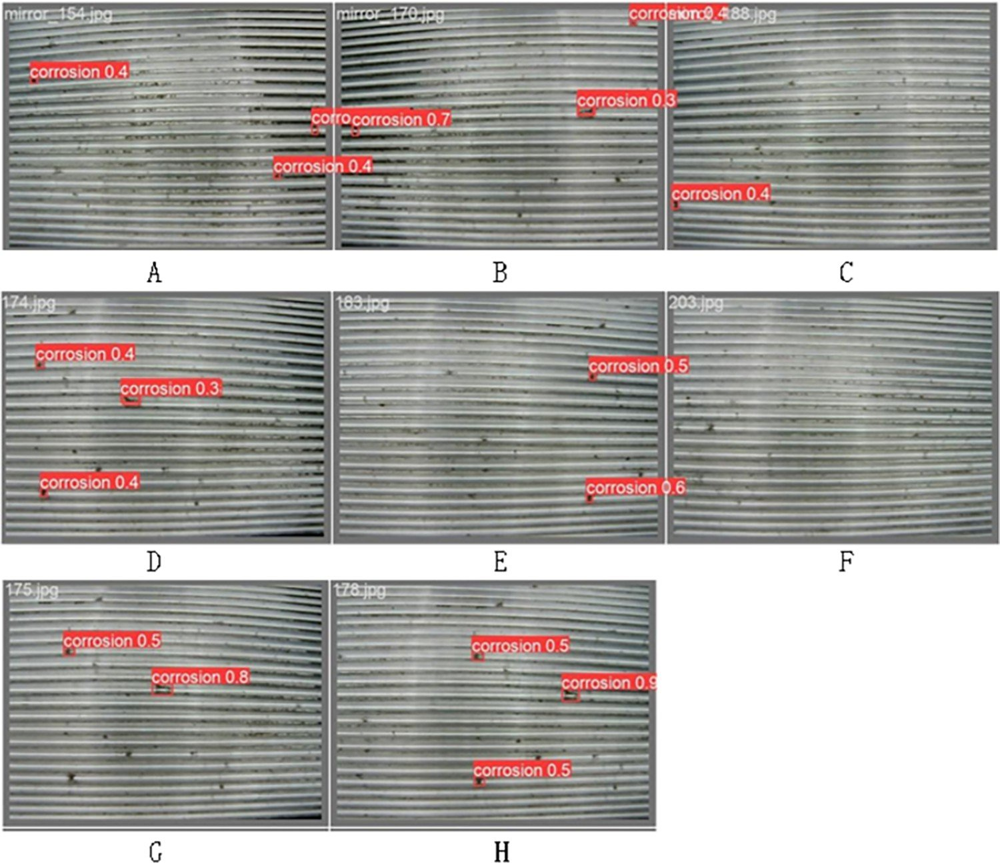
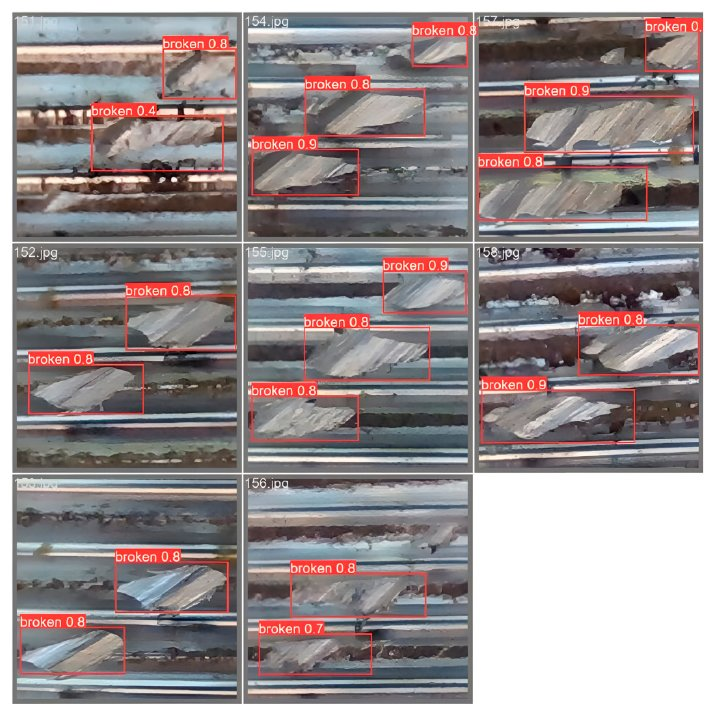
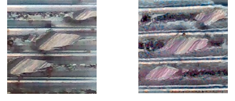
Two reviews I corresponded grew directly out of the engineering: one on image stitching for internal threads, one on calibration and distortion correction. And two patent applications extend the hardware: an internal-thread system that detects defects with adaptive binarisation and a Radon transform rather than a learned model, and an external-thread device that places four stereo camera pairs at 90° around a vertical pipe on a lifting platform and stitches their point clouds.
我作为通讯作者的两篇综述直接来自工程实践：一篇关于内螺纹图像拼接，一篇关于标定与畸变校正。两项专利申请则扩展了硬件：一套用自适应二值化和 Radon 变换（而非学习模型）检测缺陷的内螺纹系统，以及一套在升降平台上围绕竖直管件 90° 布置四对双目相机并拼接点云的外螺纹检测装置。
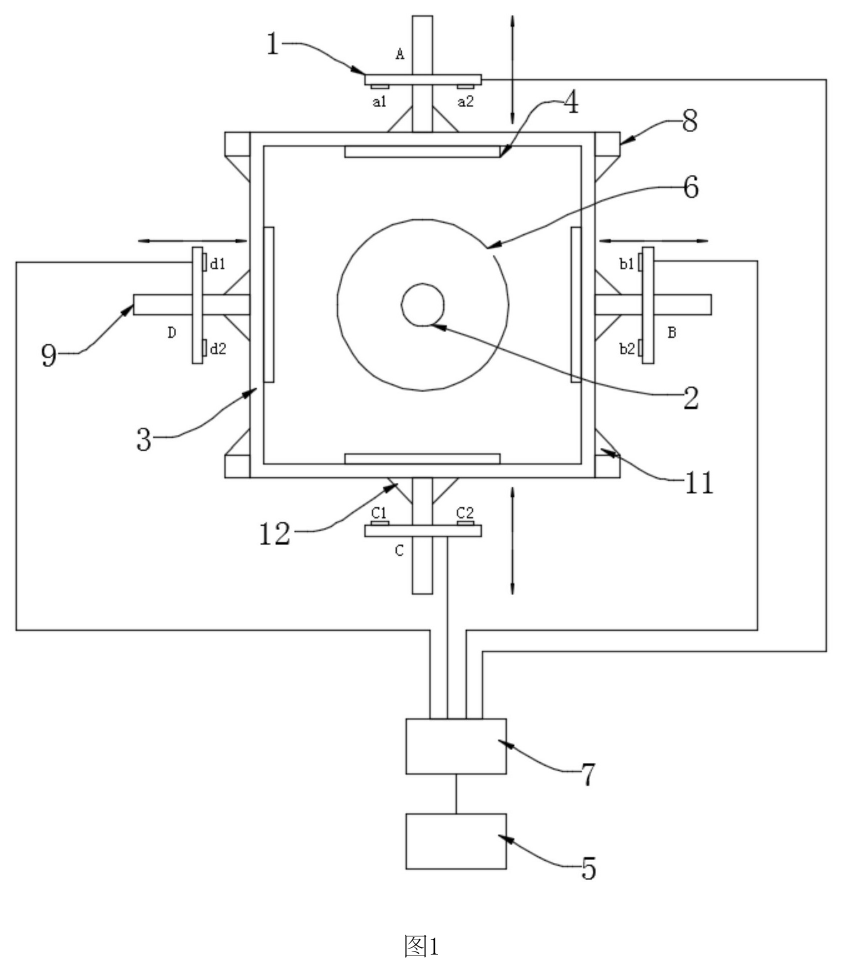
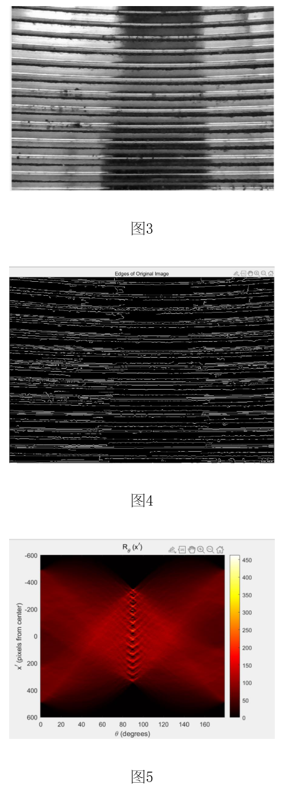